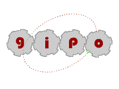

|  |
README
GIPO - Version 3.0
|
|
Overview
Slide Show
GIPO Documents
Main Documentation
INSTALLATION Prerequisites
You need Java installed on your machine. GIPO is known to work
with Java 1.4.2.
It will not currently work with Java 1.5. The appropriate Java
executable must be on your PATH.
Installation Windows Platforms
- Copy gipo<version>.zip file to destination directory e.g
c:\gipoV3
- Unzip gipo-Win32-v3.?.zip note this will create a subdirectory
gipo and and leave this file and the batch file runGIPO.bat in the top
level directory.
- Edit runGIPO change the variable GIPO to reflect your
installation directory. e.g. SET GIPO=c:\gipoV3\gipo NOTE this path
must end in the gipo directory.
- If necessary add an appropriate Java bin directory to the PATH
variable of runGIPO batch file.
- Make a shortcut to the runGIPO batch file or just run it from a
dos/command window
- Enjoy
Installation Unix/Linux
- Copy gipo<architecture>-v3.?.tar.gz file to destination
directory e.g /local/gipoV3
- Unzip/tar note this will create a subdirectory gipo and leave
this file and the shell script gipo-<architecture> in the top
level directory.
- Edit gipo-linux (or gipo-sun) change the variable GIPOHOME to
reflect your installation directory. e.g. GIPOHOME=${HOME}/gipoV3/gipo
NOTE this path must end in the gipo directory.
- Edit JAVA variable to reflect the location of the java runtime
for java version 1.4.2 on your local machine.
- Move this shell script file to somewhere on your PATH or just run
it from the current directory
- Enjoy
Research Team
R.M.Simpson
W Zhao
T.L.McCLuskey
D Liu
D. Kitchin
Programming Team
R.M.Simpson
W Zhao
D Liu
G Elliot.
GIPO COPYRIGHT NOTICE, LICENSE AND DISCLAIMER.
Copyright 2001 - 2005 by R.M.Simpson W.Zhao T.L.McCLuskey D.Liu
D.Kitchin
Permission to use, copy, modify, and distribute this software and its
documentation for any purpose and without fee is hereby granted,
provided that the above copyright notice appear in all copies and that
both the copyright notice and this permission notice and warranty
disclaimer appear in supporting documentation, and that the names of
the authors or their employers not be used in advertising or publicity
pertaining to distribution of the software without specific, written
prior permission.
The authors and their employers disclaim all warranties with regard to
this software, including all implied warranties of merchantability and
fitness. In no event shall the authors or their employers be liable for
any special, indirect or consequential damages or any damages
whatsoever resulting from loss of use, data or profits, whether in an
action of contract, negligence or other tortious action, arising out of
or in connection with the use or performance of this software.
Software Credits
Java is a trademak of Sun Microsystems
Sicstus prolog ® From Sicstus
JGraph is distributed under JGraph
License and is available from JGraph.com
JGraphaddons is distributed under JGraphaddons
License and is available from JGraph.com
Java Cup is distributed under Java
Cup
License and is available from www.cs.princeton.edu/~appel/modern/java/CUP